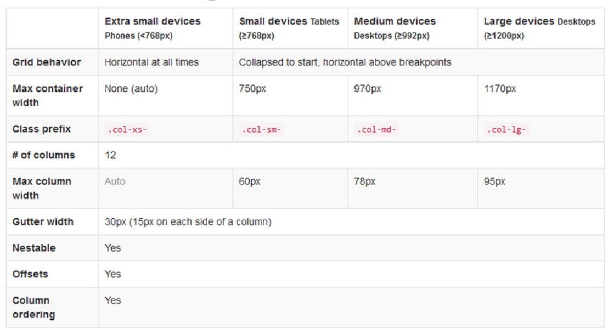
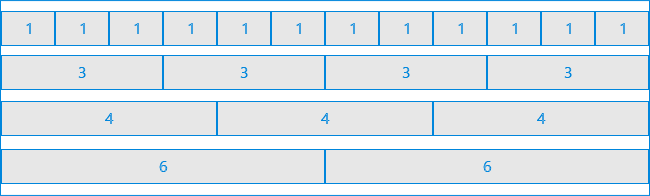
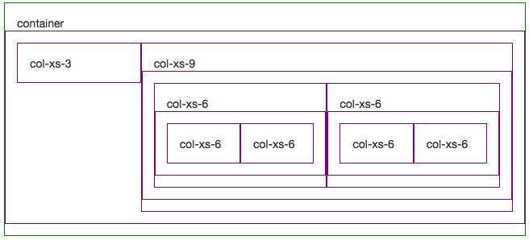
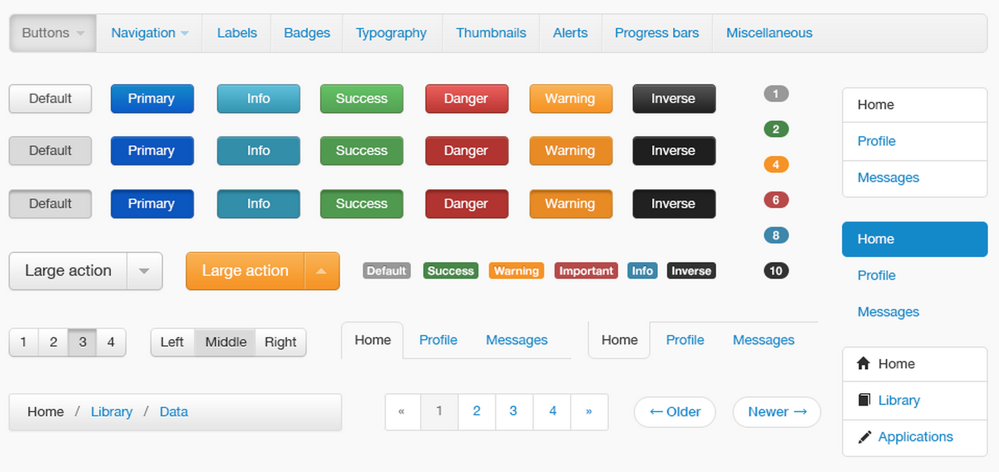

Bootstrap
Temas
- ¿Qué es bootstrap?
- Tamaños de Pantalla
- Columnas y Filas
- Elementos Extra
Bootstrap
Es un framework para crear páginas responsivas que incluye componentes de HTML, CSS y Javascript
Responsivo o Adaptable se refiere al desarrollo que toma en cuenta la apariencia de la página en diferentes disponsitivos como tablets, smartphones, PCs
Responsivo

Tamaños de pantalla de bootstrap

Columnas y Filas
Bootstrap divide los contenedores en 12 partes iguales que podemos utilizar dependiendo del tamaño de la pantalla

Anidación
Podemos anidar las columnas para crear más subcolumnas

Componentes de Bootstrap
